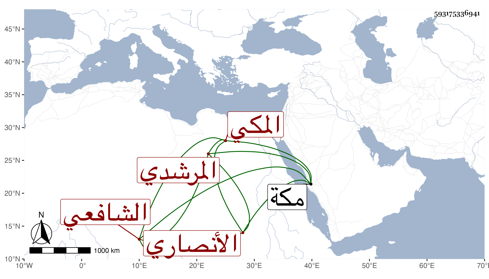

0902Sakhawi.DawLamic.ITO20230111-ara1.EIS1600.593175336941
Biography ID: 593175336941
299
أبو حامد بن عمر بن محمد بن أبي بكر الأنصاري المرشدي المكي الشافعي أخو أحمد الماضي وأبوهما واسمه محمد . ولد تقريبا سنة بضع وخمسين ممن حفظ القرآن والشاطبية وأربعي النووي ومنهاجه والطيبة وألفية النحو وعرض على البرهاني وغيره واشتغل عند عبد الحق السنباطي وجمع عليه وعلى ابن شعبان العزى للسبع وبعض ذلك على الرملاوي خير متعبد زائد الفاقة عنده شعرة منسوبة للنبي صلى الله عليه وسلم ورثها من أبيه ممن سمع مني في المجاورة الثالثة والرابعة وخطه جيد كتب به البخاري نسخة مضبوطة متقنة للشيخ إدريس اليماني عدمت وللشيخ العذول وهي الآن عنده بمكة سمع علي فيها وقرأ علي منها غيره وناب في الإمامة عن زوج عمته المحب الطبري وقام في رمضان إماما بابن قاوان بعد ابن الشيخة ثم بعد موته ترك وصار عبد المعطي يصلي معه ونعم الرجل .
